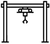
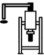
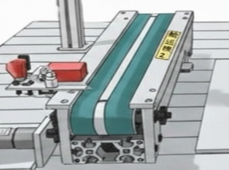

操作介面
主頁
機台監控
→
戰情室
→
生產線
影像監控
→
生產線偵測
→
虛擬模型
→
產線穩定性
→
設備導覽
→
感測器分佈圖
→
感測器內容
→
操作介面
操作介面
→
模型模擬
→
歷史資料
歷史折線圖
→
感測器歷史查詢
→
Log歷史呈現
→
報表下載
→
excel
→
其他
預測今日產出
→
交接事項
→
後端狀況
→
碳足跡
→


輸送機2

目前每小時產量 :
--
感測到工件時間
-
--
+
數值已變更 每小時產量更動為 ➔
--
確認儲存 (SET)